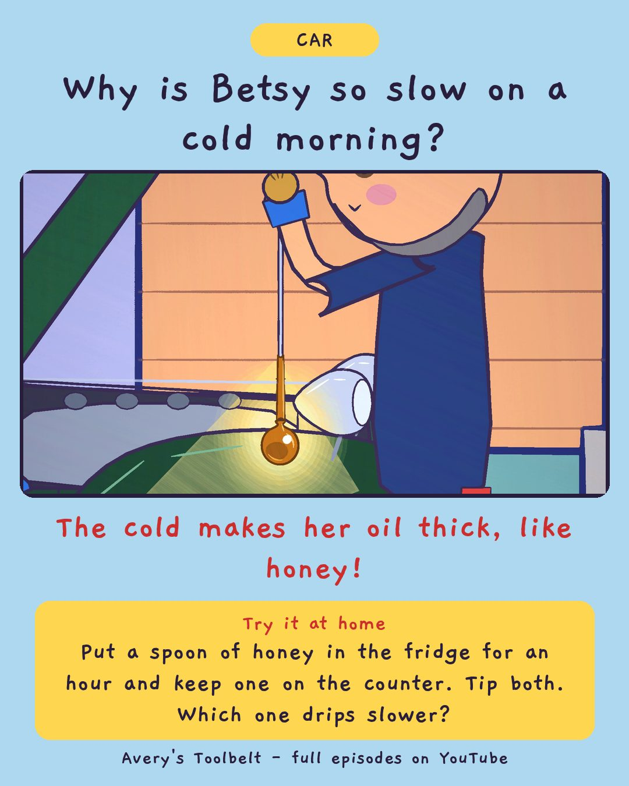

The Cold MorningWhy Is the Cold Car So Slow?
好冷的早上

Why is Betsy so slow on a cold morning?
The cold makes her oil thick, like honey!
Try it at home
Put a spoon of honey in the fridge for an hour and keep one on the counter. Tip both. Which one drips slower?
Free printable coloring page (PDF) Watch the full episode on YouTubeAbout this episode, for grown-ups
It is fifteen below in Minnesota, and Betsy, the family's 1937 car, does not want to wake up. Dad is the one who starts her. Avery's job is counting - and she is not sure counting is a real job.
Betsy tries, and slows, and stops. Is she broken? Dad says no: she sounded slow, and slow's not broken. Meanwhile Gus keeps showing up at the door, each time in a few more clothes, and each time he is taken back inside.
What children find out: cold makes the battery slow AND makes the oil thick, both at once - so the car has less push and more to push. Dad tries a little, then waits, and Avery's counting tells him how long each try was.
For grown-ups: an episode about waiting - four whole minutes of doing nothing in the cold - and about a small job that turns out to matter.